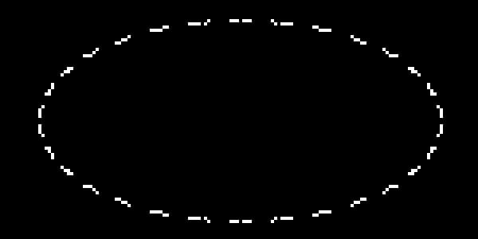
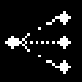
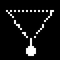
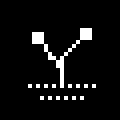

AI Coding 自主探索与持续验证研发理念 · v1.0
生命会寻求自己的出路
一份从 AI 辅助编程的失败经历中形成的研发理念
从失败里长出的方法
我负责提出值得解决的问题，AI 负责探索可能的道路，真实世界负责给出反馈。
Life finds a way
Let evidence decide what survives.
提问的方式
不再这样写
- 用指定框架重构现有系统
- 按我设计的分层架构实现若干模块
- 依次开发 A、B、C
- 最后运行测试
改为这样写
- 先核对现有系统与真实瓶颈
- 自主研究并选择最有希望的解决路径
- 以最小、可证伪的实验验证方案
- 可以反驳我的初始假设
除非这些实现手段本身就是任务目的，否则那往往是在让 AI 优化我预先选择的路径。
完整对照与通用任务模板 →
进化闭环


01变异
提出多条真正不同的解决路径

02选择
用真实任务、对照实验与成本筛选

03保留
把被证明有效的纳入基线
Variation → Selection → Retention
没有可靠的选择机制，所谓"自进化"只是不断增加代码、复杂度或上下文。
证据板
0/10 vs 0/10
小样本推翻了直觉
Deep Native 的 10 组完整配对：原始 DeepSeek 完成 8/10，启用技能后 7/10；工具调用中位数由 0 → 0。
FAIL
失败也是证据
严格失败、授权拒绝与未证明的可靠性必须被记录，不能为了让报告好看而改写历史评分。
≠
工程 PASS ≠ 价值成立
"报告生成了""工程跑通了"都不能替代真实用户价值。瓶颈可能在模型，也可能在数据、工具、授权或交互。
工作量不等于能力增长；工程上的 PASS 不自动等于真实世界里的成功。
完整经历与失败记录 →
自主的边界
方法可以改变
权限不能自行扩大
证据可以推翻方案
不能为了方案改写证据
Agent 可以探索
人仍对使命与接受结果负责
需要另行授权：GPU 推理或训练 · 付费 API · 模型与大规模数据下载 · 生产部署 · 公开发布 · 密钥与权限变更 · 破坏性操作 · 正式数据写入 · 冻结证据修改。
研究、只读审查与既定范围内的 CPU 测试，可以在当前授权下主动推进。